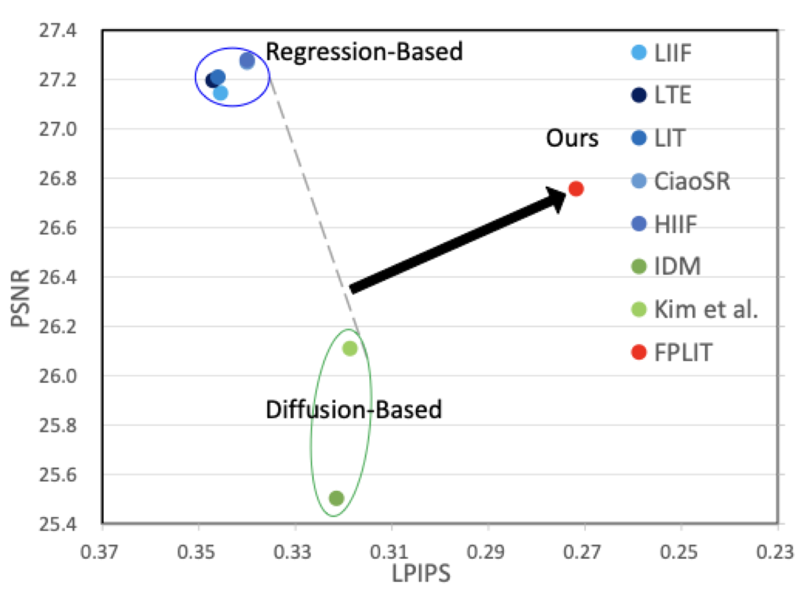
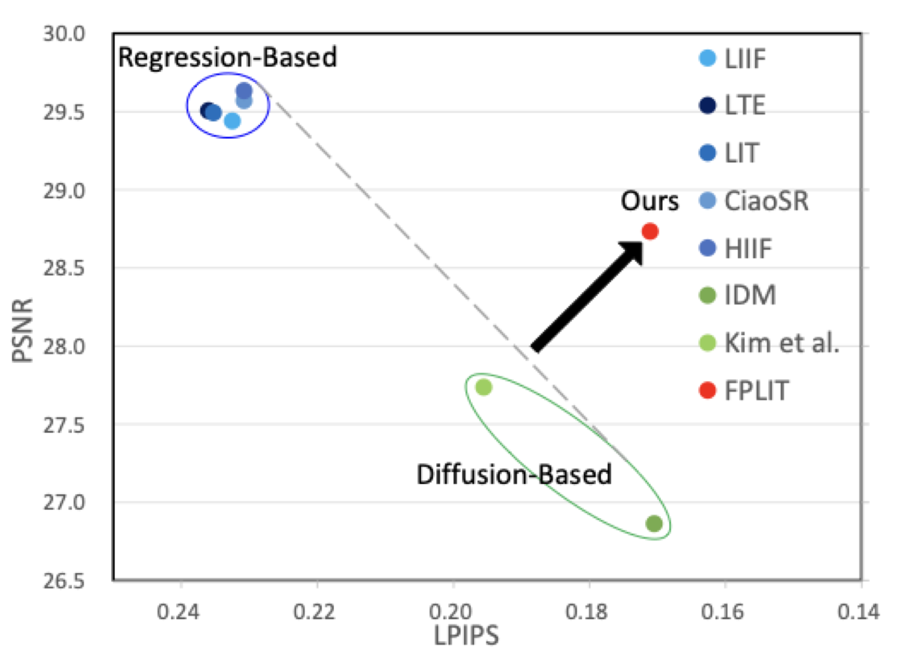
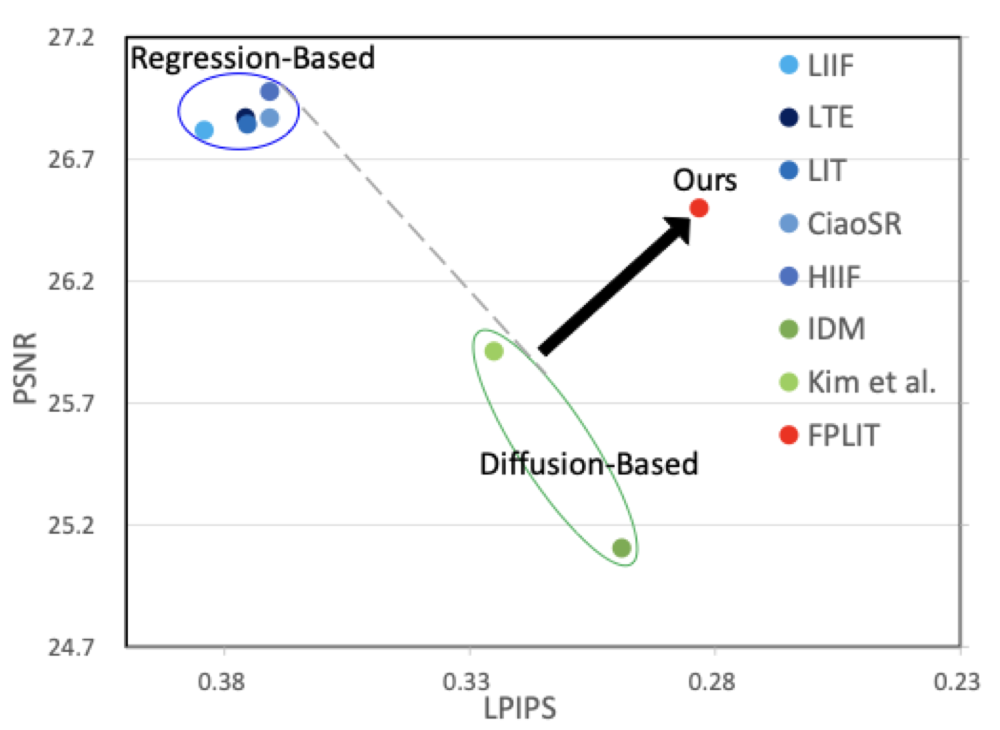
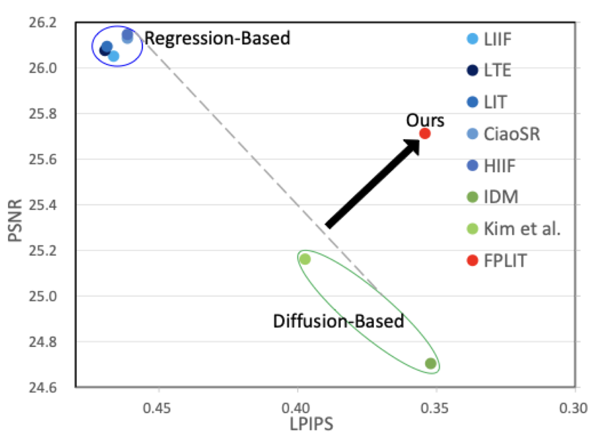
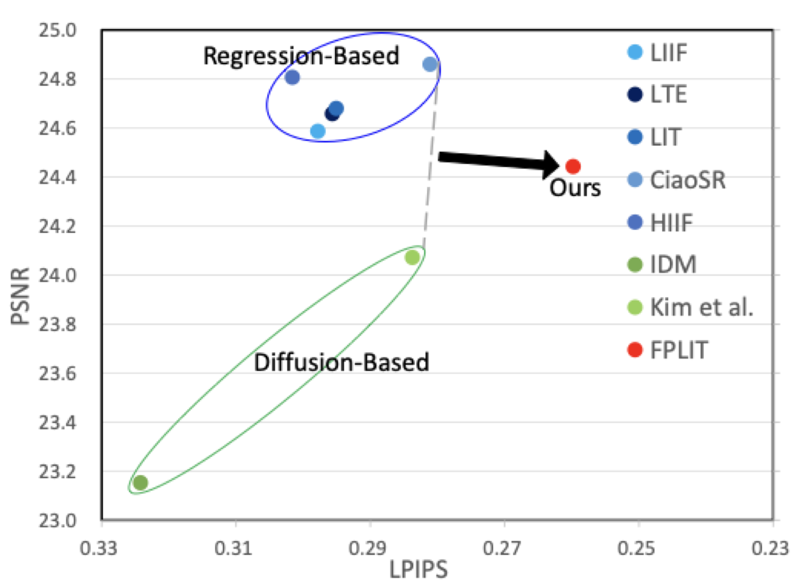
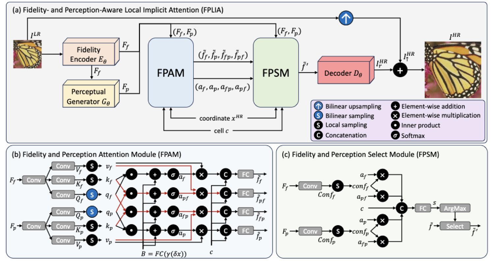
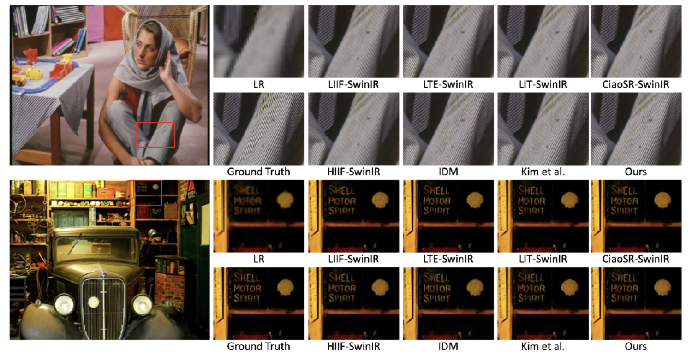
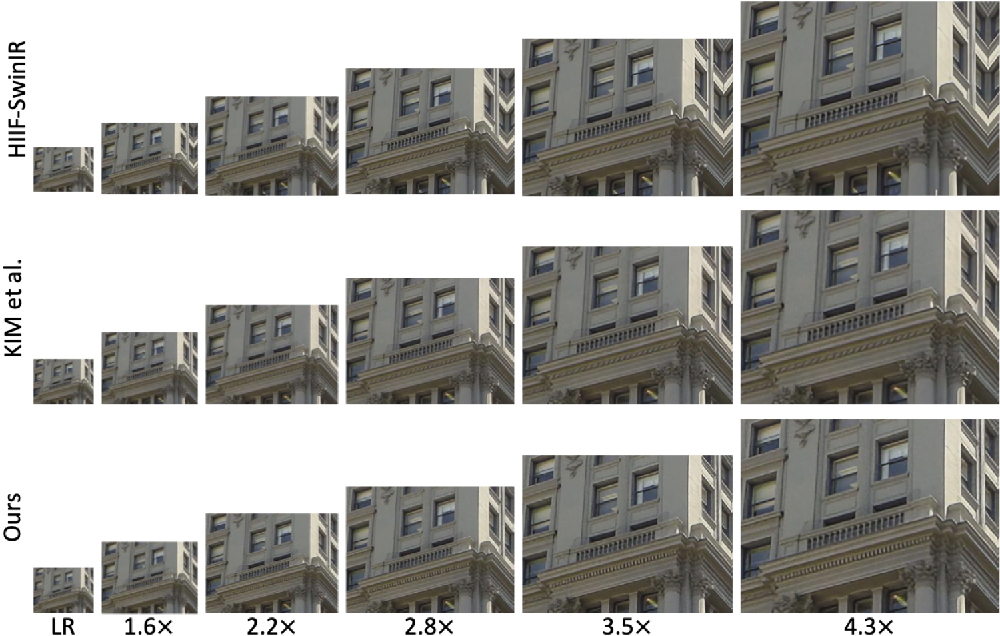

Arbitrary-scale image super-resolution (ASISR) aims to reconstruct high-resolution images from low-resolution inputs over a continuous range of upscaling factors. While traditional pixel-regression approaches often produce overly smooth results that lack realistic details, recent diffusion methods can produce sharper and more realistic textures. However, these diffusion techniques frequently introduce the risk of structural hallucinations. To address these issues, we propose Fidelity- and Perception-Aware Local Implicit Attention (FPLIA), a framework that effectively integrates fidelity-oriented features into a diffusion pipeline to produce realistic and faithful reconstructions for ASISR. We introduce a Fidelity and Perception Attention Module (FPAM), which applies both self-attention and cross-attention to fidelity-oriented and perceptual features to enhance representational capacity. To further exploit their complements, we design a Fidelity and Perception Select Module (FPSM) that adaptively selects the most representative features for RGB values prediction. We conduct extensive experiments to validate the effectiveness of these components. Both qualitative and quantitative results show that FPLIA delivers superior perceptual realism while maintaining reconstruction accuracy on standard ASISR benchmarks.



More results can be found in our paper.
@article{xu2026fplia,
author = {},
title = {},
journal = {},
year = {},
}